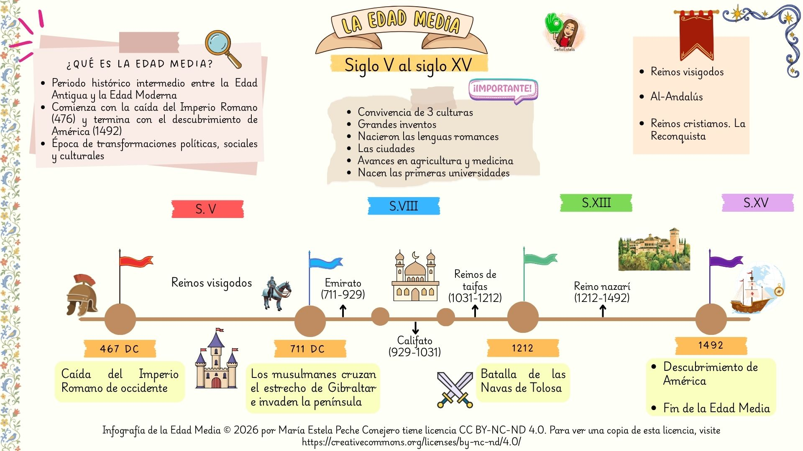

Los reinos cristianos
1. El origen de los reinos cristianos
Tras la conquista musulmana del año 711, algunos grupos cristianos se refugiaron en las montañas del norte de la península ibérica y en los Pirineos. Desde allí comenzaron a organizarse y a formar pequeños territorios independientes.
En el norte surgió el reino de Asturias, que posteriormente se convirtió en el reino de León. También aparecieron el reino de Navarra, los condados catalanes y el reino de Aragón. Con el paso del tiempo, estos territorios fueron creciendo y formando nuevos reinos.
A lo largo de la Edad Media, los reinos cristianos fueron ampliando sus territorios hacia el sur, en un proceso histórico conocido como la Reconquista.
2. La vida en una aldea cristiana
La sociedad medieval estaba dividida en tres grandes grupos o estamentos:
- La nobleza: formada nobles y caballeros, que poseían tierras y se encargaban de la guerra y la defensa. Eran vasallos del rey. Vivían en castillos.
- El clero: compuesto por religiosos, como sacerdotes y monjes, que se dedicaban a la religión y a la oración en iglesias y monasterios.
- Los campesinos: trabajaban las tierras y producían alimentos para toda la sociedad. Eran el grupo más numeroso. Algunos eran propietarios de sus tierras y el resto siervos que carecían de derechos.
La mayoría de la población vivía en pequeñas aldeas y trabajaba en el campo. Cultivaban cereales, verduras y frutas, criaban animales y utilizaban herramientas sencillas para realizar sus tareas.
En los castillos vivían los reyes y los nobles. Servían para defender el territorio frente a los ataques enemigos y, en caso de peligro, los habitantes de las aldeas cercanas podían refugiarse en ellos. Estaban protegidos por murallas, fosos, puentes levadizos y torres. El castillo tenía un patio central o patio de armas.
3. ¿Cómo eran las ciudades medievales?
Durante la Edad Media, algunas ciudades crecieron gracias al comercio y la artesanía. Estaban rodeadas de murallas para proteger a sus habitantes y contaban con calles estrechas. Se organizaban en barrios o burgos.
En el centro solía encontrarse la plaza, donde se celebraban mercados y reuniones. También destacaban las catedrales, universidades, el ayuntamiento y los palacios de la nobleza.
En las ciudades surgieron los talleres artesanos, donde se fabricaban productos como ropa, calzado, herramientas y objetos de cerámica. Los artesanos que realizaban el mismo oficio se agrupaban en gremios.
Además, el comercio fue creciendo gracias a los mercaderes, que viajaban de unas ciudades a otras para comprar y vender mercancías. También se celebraban grandes ferias, donde se reunían comerciantes y compradores de distintos lugares.
